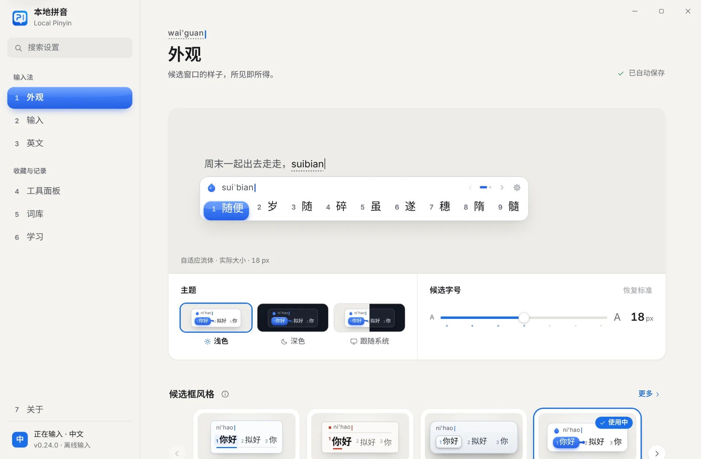
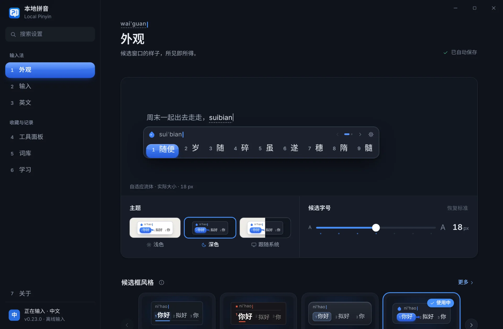
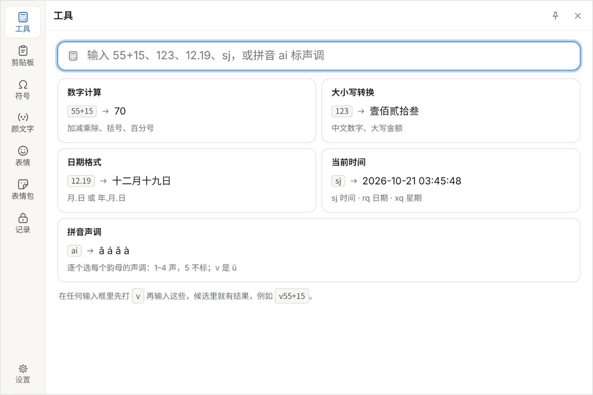
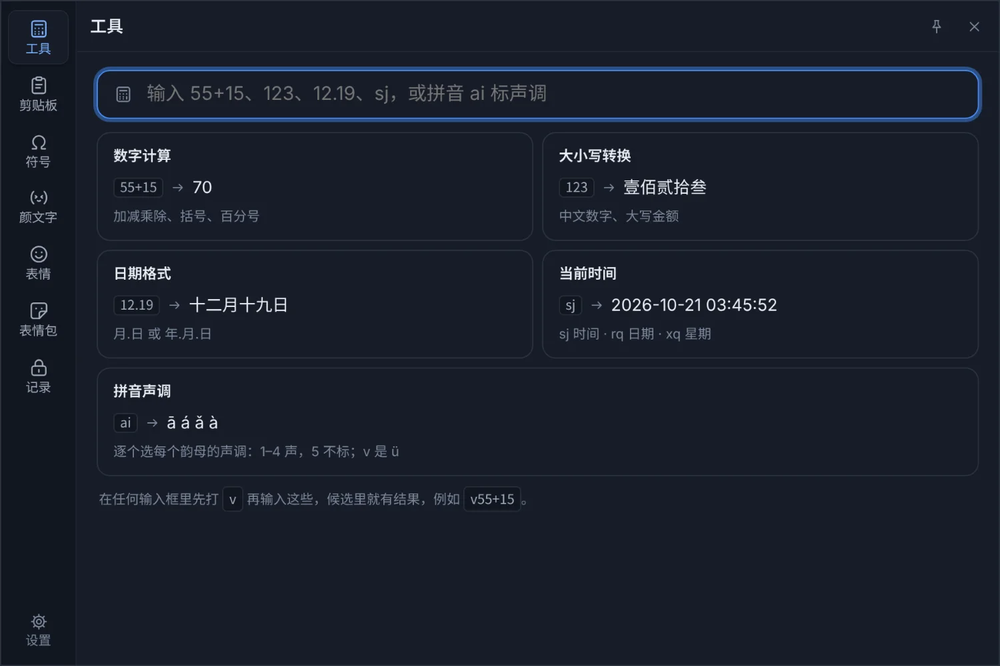

示意：输入 nihaoshijie，候选窗口的第一个候选是“你好世界”，按空格上屏。
本地
你打的每一个字，都在这台电脑上读成候选、排好顺序、记住你的习惯。没有云端，没有账号，也没有广告。
- 打字不联网查词、排序、纠错和学习全部在本机完成，断网照样好用。
- 数据只在本机个人词库、学习记录、剪贴板和表情包都存在你的电脑上，卸载时也不会删掉。
- 开源，MIT 许可每一行代码都在 GitHub 上，可以查看、构建和验证。
会联网的只有三件事，都由你决定：打开设置程序时检查有没有新版本（可以在“关于”页关闭）；开启“Tab 键翻译成英文”后按 Tab（默认关闭）；把网页上的图片加为表情包时，按图片地址下载一次原图。
它会看前文。
同样的拼音，放进不同的句子，第一个候选就不一样。本地拼音读光标前已经写下的字，用一个在本机运行的语言模型给候选排序。
- “他跑”后面输入 de，第一个候选是“得”。
- “没有”后面输入 shijian，第一个候选是“时间”。
- “这种又是”后面输入 zalaide，第一个候选是“咋来的”。
- 86.04%
- 逐词输入、参考前文时，第一个候选就是要打的词。留出测试集，20,626 例。
- 1,360 万字
- 训练前文模型的语料，按权重计。来源和处理步骤都记录在仓库里。
- 17.1 MB
- 模型大小。只读内存映射，所有程序共用同一份内存。
打错了，它也认得。
多打一个字母、漏打一个、按到旁边的键，中文里夹着英文，只打首字母，它都读得懂。
- 拼写纠错多打、漏打、颠倒、按到相邻键nihso你好
- 中英混输英文单词、编程术语、缩写直接打woyongpythonxiedaima我用 Python 写代码
- 简拼每个字只打首字母bjdx北京大学
- 模糊音开启 z = zh 之后zongguo中国
- 双拼小鹤双拼，也有自然码nihc你好
- 常用场景选了“编程开发”之后yilaizhuru依赖注入
- 自动造词分别打过“量”“甲”“成”之后liangjiacheng量甲成
八种候选框，一套按键。
空格上屏、数字选词、方向键翻页，八种都一样。在设置的“外观”页点一下，正在打字的窗口立刻换成新样子。
当前候选是一滴流动的液体：换候选时拉长、收腰，再聚拢流过去；窗口按候选的长短在紧凑、平衡、展开三种形态之间切换。这是默认风格。
设置，像一张划了格线的纸。
每一节的标题站在页边，设置之间只用细线分开。侧边栏本身是一个候选列表：页面有序号，Ctrl + 数字直接打开，当前页用你选的候选框风格画出来。


连按两下 Tab。
工具面板出现在光标旁边：算数、写大写数字、查日期，找符号、颜文字和表情，翻剪贴板。全部可以用键盘完成，选好的内容直接输入到原来的位置。


- 工具
- 55+15 → 70，123 → 壹佰贰拾叁，sj → 当前时间。在任何输入框里先打 v，候选里也有结果。
- 剪贴板
- 记住复制过的文字和图片，图片里的字也能搜到。只保存在本机，可以关闭，也可以一键清空。
- 符号
- 约 3,100 个：标点、货币、数学、希腊字母、箭头、拼音声调……按中文名搜索，“美元”就是 $。
- 颜文字
- 1,000 个，按开心、难过、无语、打招呼、睡觉、动物等分组。
- 表情
- 约 1,870 个，打拼音就能找到。在面板里用过的表情，之后打它的名字时也会出现在候选里。
- 表情包
- 把图片或动图拖进来就加好了，从微信拖进来也行，点一下发送。
- 记录
- 地址、账号密码、银行卡号，加密保存。解锁后选一项，直接输入到光标处。
还有一个英文输入法。
本地英文和本地拼音一起安装，按 Alt + CapsLock 切换。整句打完，连按两下空格，拼写、大小写和常见搭配一起改好；紧接着按退格，换回原样。
示例：输入 i think teh plan could of worked，连按两下空格后变成 I think the plan could have worked。
- 约 13 万
- 个英文单词，词频来自公开、可商用的英文句子，只存词和次数。
- 86.0%
- 日常短句里随机打错的单词，按空格改对的比例。
- 0.01%
- 本来正确的单词被改动的比例，而且只改大小写和撇号。
还有这些细节。
- 21 万条词库
- 218,942 条，《通用规范汉字表》一级字全部能打；日常词、成语、网络用语和聊天短句一直在补。
- 选词记忆会慢慢淡去
- 选过的词先排第一；一段时间不用，就一次往后挪一位，最后回到原来的顺序。常用的越用越稳。
- 学到的词可以删
- 在候选上按 Ctrl + Delete，马上忘掉这个词；也可以在“学习”页搜索后一条条删除。
- 英文标点用在该用的地方
- 在 VS Code、JetBrains 系列和终端里，标点自动用半角，自动配对括号照常工作；紧跟在数字后面的标点也是英文的：3.14、1,000、12:30。
- 第一次打开有导览
- 用你正在用的候选框的实际截图讲怎么用，再带你走五步：挑候选框、中英切换、本地英文、工具面板、Ctrl + K。在“关于”里随时重看。
- 32 位程序也能用
- QQ 音乐这类 32 位桌面软件同样能切换到本地拼音，和 64 位共用同一份词库和设置。
- 商店应用里也能用
- Notepads、邮件等商店应用里，候选窗口、表情包和设置都能用。
- Tab 翻译成英文
- 打完一段中文按 Tab，换成英文：我想吃饭 → I want to eat。需要联网，默认关闭。
- 导入与导出
- 设置、个人词库、选词记录、输入习惯、表情包、剪贴板，选几项一次带走，换电脑也不丢。
- 自动检查更新
- 打开设置时检查 GitHub 上的新版本，下载后用 SHA-256 校验，不一致就删掉。可以关闭。
下载本地拼音
0.24.0 预览版，适用于 Windows 10 和 Windows 11（x64），32 位程序同样可用。
- 运行安装包点“立即安装”，在 Windows 的权限确认里选“是”。
- 按 Win + 空格选“本地拼音”或“本地英文”。升级时，重新打开正在打字的程序。
- 开始打字点候选窗口右上角的齿轮，打开设置。